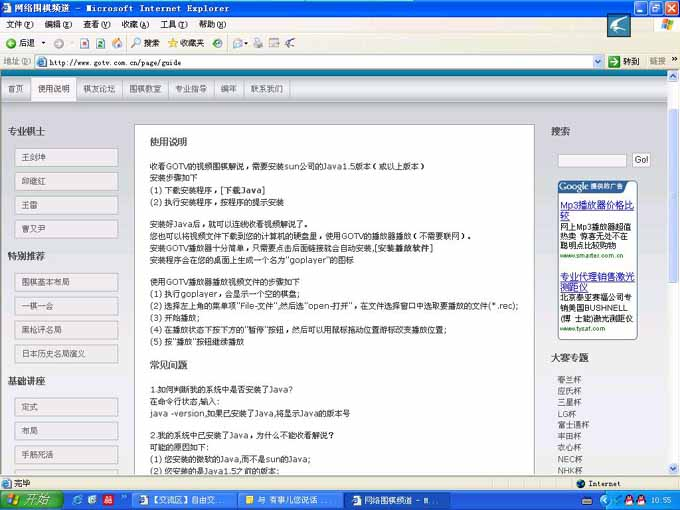
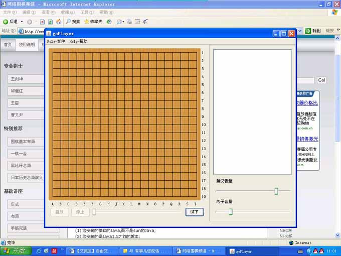
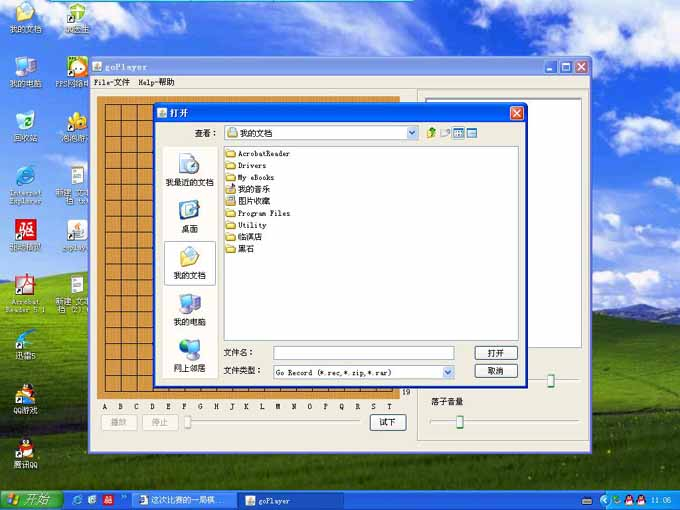
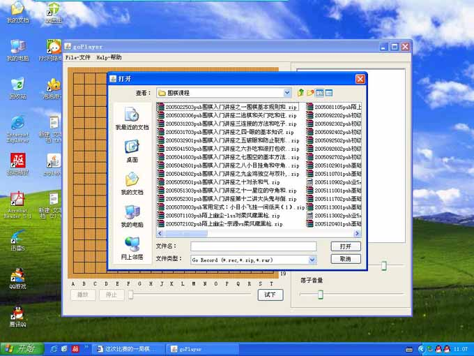
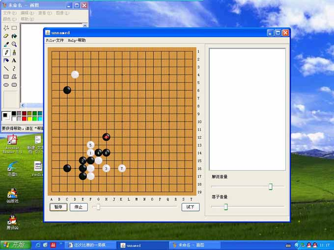

我们的教室可以做成这样吗
#1 我们的教室可以做成这样吗 作者：茗弈柳扶风 发表时间：2008-6-27 12:13:36
我在网络上下棋的时间很长，经历过renjuclass教室，也看过浙江连珠教室，在QQ游戏里看别人讲棋。虽然有UC辅助，还是觉得缺少了点什么。我一直在想，有没有更好更系统的学棋方式。
常常在教室看老师打字的时候想，有语音多好。也在QQ游戏里听老师语音的时候想，这样悔棋多别扭啊，要是有教室的功能多好。每次听完课的时候也很遗憾，要是能把课程保存下来多好。在看教室回放录象的时候，没声音，只能盯着画面看，一会看解说，一会看图。到现在，教室都没课了。
要是有更简单一些的学习软件就好了。
并不是只有五子棋的学习有这样的问题。我在玩中国象棋的时候也遇到这样的苦恼，在学国际象棋的时候也同样。在学围棋的时候也相同。每个爱好者应该都有过这样的想法吧。
于是我开始在网络上搜集软件，中国象棋的，国际象棋的，五子棋的，围棋的，发现大家都是把对弈作为重点，几乎找不到好一些的学习软件。我想，要是能自己做一个就好了。可惜，我很笨，编程我不会，下棋我不高，语文也学的不好，写作文更难，发帖子还好点。
去年的时候发现了一个有语音课程的网站，是围棋的，当时就想，要是五子棋也能这样做多好。于是，就有了做连珠语音课程的想法。前几天小刀发了IWZQ的连接给我，是她评的一盘 棋。我才第一次进来IWZQ的站点。才发现，哦，这里有我们茗弈阁的坛子。然后对IWZQ了解更多，以前的想法就逐渐冒了起来。看到有志大大在征求对教室意见的帖子，就巴巴的等着加V发贴，为教室提个意见，盼望能有高手把小菜鸟的愿望变成现实。
偶对教室的建议：不要多复杂的功能，有语音就够了。其他功能有浙江教室参照。教室录象最好就象偶参照的那个围棋网站一样，一个小小的RAR文件只包括棋盘和语音。方便大家在本地学习。希望这样的教室能给大家带来更多的方便，也希望有更多的爱好者晋升高手行列。
以下是偶抓的图，这个围棋网站的名称是网络围棋频道，提供围棋语音解说。大家百度一下就看到了。
希望能给各位大大一个参考。
它的客户端很简单，功能就是打开。下载的文件也很小，不用打开直接就能听。





［ 有志青年 于 2008-6-27 13:38:15 时奖励此帖[金币加 20 威望加1］
#2 Re:我们的教室可以做成这样吗 作者：逆刃 发表时间：2008-6-27 12:23:51
当年红颜花圃中，如今心情大不同。寒瑞三载弹指过，谁见当年柳扶风。
一曲名月临江仙，疏星斜月谁把玩。梦里花落昨天事，误读连珠多少年。
真是好文采！
我们小丸大哥很NB的，可以跟他建议下，说不定一个好的教室就出来了哦！
#3 Re:我们的教室可以做成这样吗 作者：茗弈柳扶风 发表时间：2008-6-27 12:29:37
呼，这样一修改就好看多了。小丸大哥的测试版出来了偶报名测试，嘿嘿。
文才不怎么样，过奖过奖。。。。
#4 Re:我们的教室可以做成这样吗 作者：茗弈柳扶风 发表时间：2008-6-27 12:57:34
有志大大2008。1。31日的发言：
语音教室的语音目前可以使用uc来配合。
当初之所以开发这个教室系统，是为了将手头的n多orc课件转录到网上给更多的人随时查看。
这个“随时看”是我的出发点，所以语音功能被我排除了，因为语音的教学是很难回放的，数据量大、回放难以声图配合。
而语音教室的技术难题已经初步解决，也许后期会开发吧，但我个人不热衷，呵呵。
我的想法：1 语音的教学是很难回放的，数据量大、回放难以声图配合。这个问题和我上面说的网站比较，似乎不成问题。人家能做到的事情，我想我们也能做到。
2语音的功能应该是以后游戏的标准，包括视频。我们现在借用UC，不代表以后就一直使用UC。弈城围棋就是代表。
3来教室学习的爱好者水平是参查不齐的，讲的简单吧高手不过瘾，讲的复杂吧菜鸟听不懂。一个教室容纳初级，中级，高级三个级别的学生，效果并不好。
#5 Re:我们的教室可以做成这样吗 作者：有志青年 发表时间：2008-6-27 13:38:09
好贴，我先顶！然后慢慢学习、消化、思考……#6 Re:我们的教室可以做成这样吗 作者：牧羊犬 发表时间：2008-11-7 11:11:22
好棒哦！我顶一个！希望我能体验到……